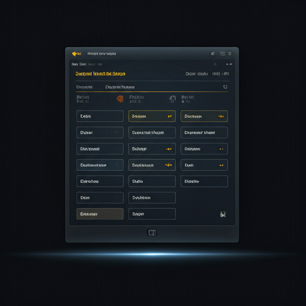
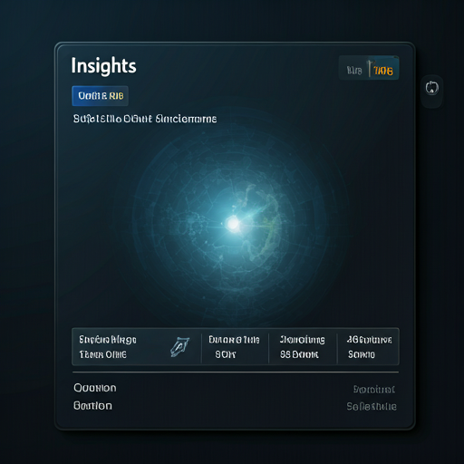
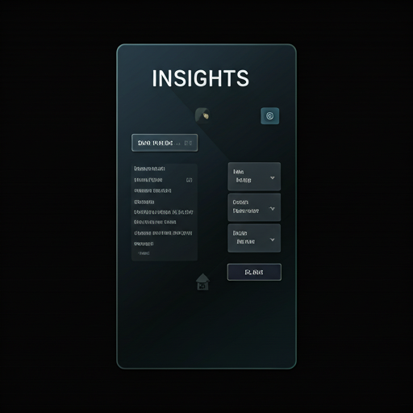
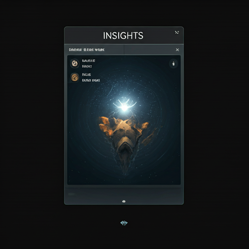

Scalable Systems for Unscalable Teams
How to implement rigorous operational standards without crushing the human spirit of innovation.
Reflections on product operations, leadership development, and the intentional pursuit of building meaningful organizations.
"In an era obsessed with velocity, the most effective leaders are those who curate silence to make space for clarity."
Read the Essay arrow_forward
How to implement rigorous operational standards without crushing the human spirit of innovation.

Measuring the impact of presence and focus on high-stakes team outcomes and retention.

A guide to developing authority through competence, nuance, and strategic vulnerability.

Linear progression is a myth of the 20th century. In a complex world, we need maps that evolve as fast as our context.

Exploring how physical and digital environments dictate the quality of our highest-level work.
Join a community of 5,000+ intentional leaders. Receive one deep-dive essay every second Tuesday. No noise, just insight.
Privacy respected. One-click unsubscribe.
"The role of the curator is not just to select, but to provide the *meaning* between the selections."